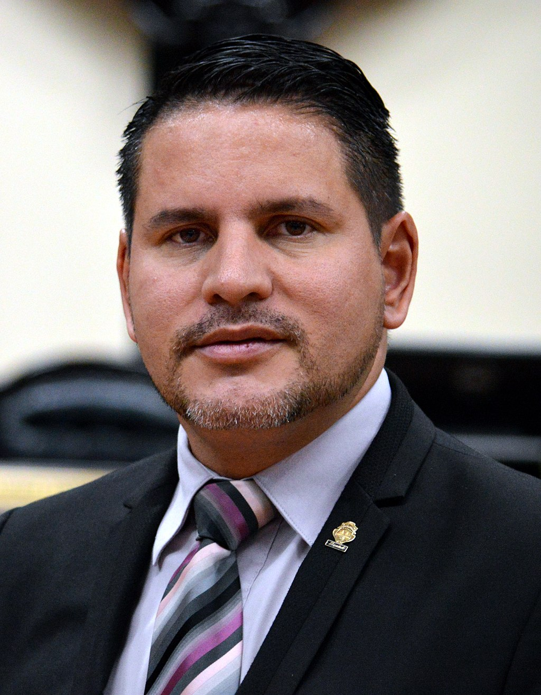

| Nombre | Partido | Pensamientos | Programa de Gobierno | |
|---|---|---|---|---|
|  | Fabricio Alvarado | “No vamos a respaldar en ningún caso medidas represivas, injustificadas, contra ningún pueblo, contra ninguna nación en el mundo, pero también reivindicamos y defendemos el derecho de autodeterminación de los pueblos”. | Descargar el programa de Gobierno |